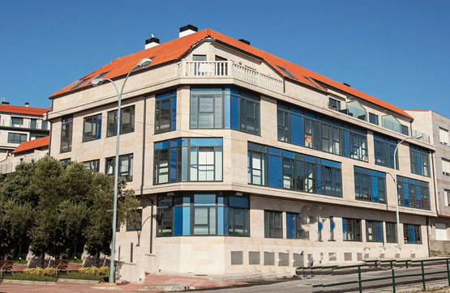
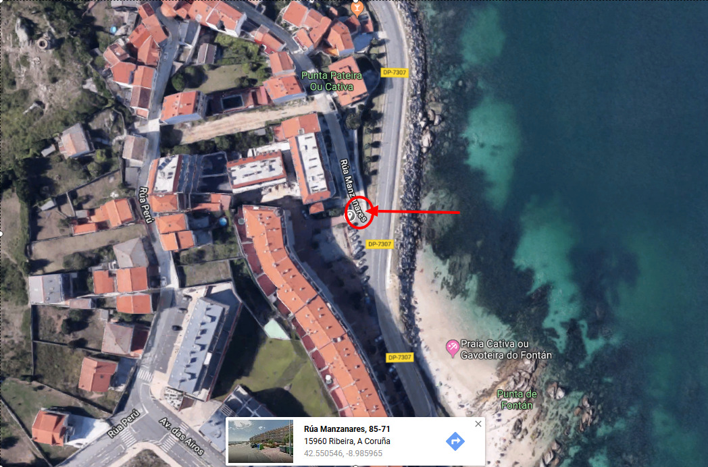
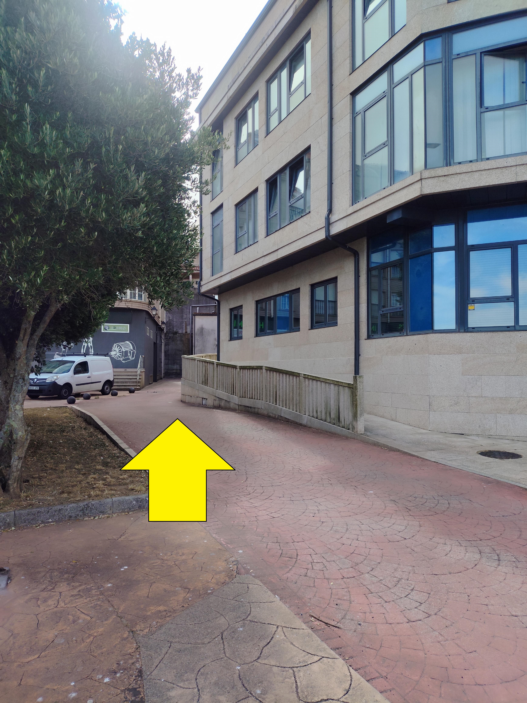

Bienvenido a Ribeira
Te damos la bienvenida al Apartamento romántico con el mar a tus pies en Ribeira. Queremos que tu estancia sea mágica, relajante y absolutamente inolvidable.
En esta guía digital tienes todo lo necesario para tu llegada y estancia. Desplázate por las pestañas inferiores para ver los detalles de acceso, normas y recomendaciones locales.
Acciones Rápidas
El tiempo en Ribeira
Instrucciones de Acceso
El apartamento se encuentra en la calle Manzanares 126, Ribeira. Tiene garaje privado con acceso directo al piso mediante ascensor.
Paso 1: Abrir el Portal Exterior
Sitúate frente al portal 126 del edificio (justo detrás del edificio principal).
Pulsa el botón 2C en el telefonillo y, de inmediato, realiza una llamada al teléfono
634 32 20 02
.
* He autorizado tu número de teléfono móvil para que el portal se abra de forma automática.
Paso 2: Retirar las Llaves
Entra en el portal y abre el buzón 2C. Encontrarás una caja de seguridad negra.
Introduce el código de apertura:
1262.
Baja la palanca negra de la izquierda para abrirla. Dentro están las llaves y el mando del garaje.
Por favor, vuelve a cerrar la caja, desordena las ruedas y cierra el buzón al terminar. :)
Paso 3: Garaje y Ascensor
Tu plaza de garaje es la número 41. Al entrar al garaje, gira a la derecha y de nuevo a la derecha.
Puedes subir directamente al apartamento en ascensor.
Atención: La misma llave abre el portal, la puerta interna del garaje y el apartamento. Te recomendamos primero subir al piso y luego bajar al garaje con calma para ver la plaza.
Ayuda Visual
A continuación tienes fotos de la ubicación y el edificio para que te sitúes sin perderte:
El portal 126 del edificio:

Ubicación en Google Maps: (Toca para abrir la navegación)

Entrada al portal y al garaje:

Aquí No Hay Wi-Fi
Queremos que desconectes, descanses y mires al mar.
Aprovecha esta estancia para relajarte con el sonido de las olas, dar un paseo por la playa de Ribeira y desconectar de las notificaciones.
Instrucciones de Salida (Check-out)
La hora límite de salida es a las 12:00h.
Al marcharte, te rogamos hacer lo siguiente:
- Apaga todas las luces y calefacción.
- Deja las llaves y el mando del garaje en la misma caja de seguridad dentro del buzón 2C.
- Desordena el código numérico al cerrar la cajita metálica.
- Avísame con un WhatsApp rápido para confirmarme que todo ha ido genial y ya habéis salido.
Normas de Convivencia
Para garantizar una estancia agradable y el perfecto estado del apartamento, te recordamos las siguientes pautas:
Prohibido Fumar
El apartamento es un espacio 100% libre de humo.
No se permiten fiestas
Respetemos el descanso de los vecinos del edificio.
No se admiten mascotas
Nos encantan los animales, pero por cuestiones de alergias y experiencias pasadas, no están permitidos.
Solo huéspedes registrados
La reserva está hecha exclusivamente para el número de personas indicadas en el contrato.
Tours y Visitas Turísticas
¿Quieres reservar excursiones oficiales o visitas guiadas en Ribeira y el resto de Galicia?
Qué Hacer en Ribeira y Alrededores
Te dejamos nuestras sugerencias locales favoritas para comer bien y visitar la zona de Barbanza:
Qué Hacer en Santiago y Alrededores
Nuestras recomendaciones favoritas en la capital de Galicia, Santiago de Compostela:
Ruta de Galicia en 6 Días
Si quieres explorar el resto de nuestra maravillosa comunidad, te proponemos este itinerario optimizado día a día:
Día 1: Santiago de Compostela
Visita obligada a la Catedral de Santiago, el casco histórico de piedra y sus calles de soportales, y el Mercado de Abastos.
Día 2: Rías Baixas (Pontevedra y Combarro)
Visita el casco viejo peatonal de Pontevedra, los hórreos a orillas del mar en Combarro y el Parque Natural de Illa de Arousa.
Día 3: A Coruña y Betanzos
Recorre el paseo marítimo de A Coruña hasta la Torre de Hércules (único faro romano en funcionamiento). Cerca queda Betanzos, cuna de las mejores tortillas poco hechas.
Día 4: Ría de Arousa y Barbanza
Explora los Castros de Baroña, come el bocadillo de pulpo en Aguiño, sube a La Curota y relájate en la inmensa playa del Vilar.
Día 5: Ourense y Termas
Disfruta de las termas romanas al aire libre en Outariz a orillas del río Miño, el centro histórico de Ourense y el bonito pueblo medieval de Allariz.
Día 6: Lugo y su Muralla Romana
Lugo alberga la única muralla romana del mundo conservada íntegra, por la que puedes pasear por encima. Además, es famosa por sus abundantes tapas gratis con la bebida.
Vídeos Inspiradores
Descubre los paisajes que te esperan en Galicia: